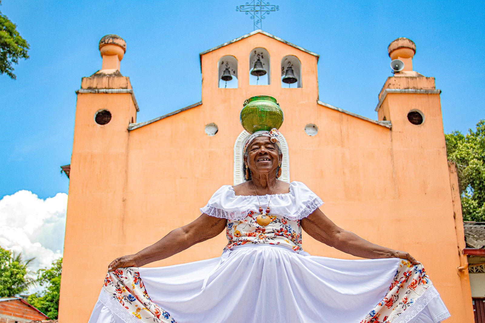
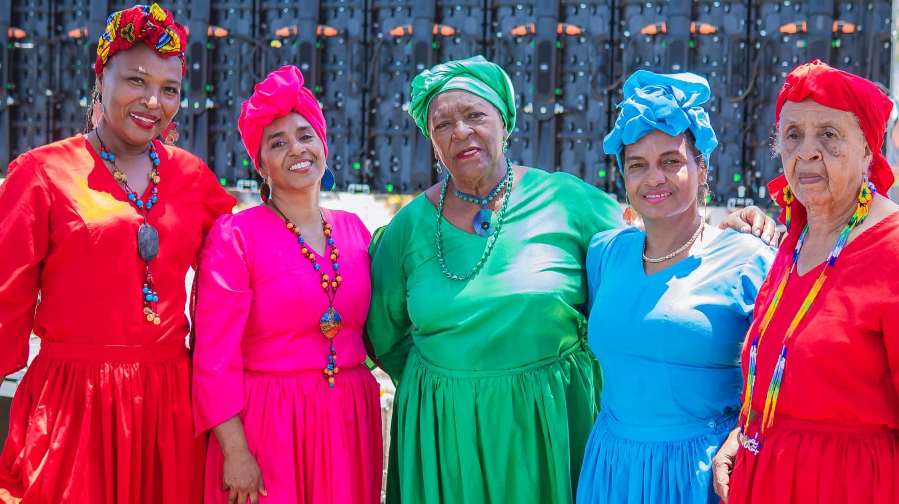

Patía tiene
un ritmo
propio.
Hay historias que se cuentan con palabras y otras que se transmiten a través de la música y el movimiento. En Patía, las tradiciones conectan a sus habitantes con la memoria cultural de su territorio.
Descubrir la tradición ↓
Tradiciones que
pasan de generación
en generación.
La música y la danza son formas de compartir conocimientos, expresar identidad y mantener presentes las costumbres de una comunidad.
En este recorrido conocerás al maestro Efraín González, su interpretación del violín y las danzas que niños y jóvenes aprenden para contribuir a la continuidad de las tradiciones patianas.
Las cantadoras del Patía: voces que conservan nuestra historia.
Las cantadoras del Patía son docentes mujeres que han dedicado su amor al arte, a la cultura y a la conservación de las tradiciones del majestuoso Valle del Patía.
Ellas son embajadoras de nuestro territorio porque, con su música al ritmo del bambuco, han dado a conocer la riqueza cultural del Valle del Patía y mantienen vivas las expresiones que forman parte de nuestra identidad.
Mujeres · Bambuco · Identidad cultural
El violín también cuenta historias.
El maestro Efraín González se dedica a enseñar la música y el arte patiano. Su labor permite compartir conocimientos culturales y acercar a nuevas generaciones a estas expresiones del territorio.
En este breve registro puedes escucharlo interpretar el violín en un espacio rodeado de piezas artesanales. La música y el trabajo con el totumo se encuentran en un mismo lugar.
24 segundos de músicaEl ritmo también se aprende.
Niños y jóvenes se acercan a las danzas tradicionales mediante la enseñanza y la práctica. Cada presentación es una oportunidad para compartir movimientos, expresiones y conocimientos culturales.
La danza reúne a sus participantes y permite que los conocimientos culturales sigan circulando entre las nuevas generaciones.
Muchas formas de expresar una identidad.
Las expresiones folclóricas y los bailes tradicionales permiten apreciar el movimiento, los vestuarios y la participación colectiva.
Su enseñanza y práctica son importantes para preservar los saberes culturales y mantener viva la relación entre la comunidad y sus tradiciones.
Danza · Cultura · ComunidadUna tierra se conoce
también por lo que conserva.
La música y la danza son parte de la historia cultural de Patía. Continúa descubriendo otras expresiones del territorio a través de Rumbo.
Volver al inicio ↑